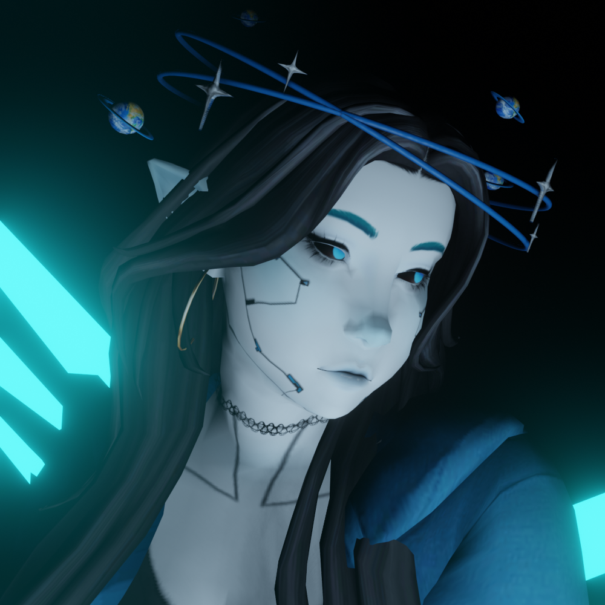

about the webmaster

i, the host, run the majority of this site.
my name is cyrus. i use they/them pronouns, my body is 23 years old, and my gender can be described as everything and nothing all at once. i am queer and polyamorous, taken by my two lovely partners. i am the host of our system, i am mentally ill, and i am neurodivergent. i am also chronically ill. and a taurus, if that matters. i'm also alterhuman and do not consider myself to be human.
i studied web development and web design briefly at my local community college, but i'm currently taking a break to focus on trauma recovery and my mental health. i am disabled and cannot work at this time. i live with my partner system and her family on planet earth.
i consider myself to be a creative, but only when i have time, energy, and motivation. i create all sorts of things; art, stories, kandi bracelets, just to name a few things. my other hobbies include roleplaying, listening to music, collecting things, playing video games, and probably a few other things that i'm forgetting.
i can be very shy and awkward, but im at least working on my shyness. i apologize if i am a little off-putting sometimes. i try my best to be kind and friendly.
online, you can find me here on this webpage.